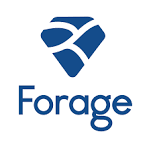

<!-- VIRTUAL EXPERIENCE -->
<section id="virtual-experience" class="animate">
    <div class="container">
        <h2>Virtual Experiences / Job Simulations</h2>
        <div class="tiles-grid">

            <!-- Deloitte Tile -->
            <div class="tile">
                <div class="tile-front deloitte">
                    
                </div>
                <div class="tile-back">
                    <div class="back-content">
                        
                        <h3>Deloitte Australia – Data Analytics Job Simulation (Forage)</h3>
                        <ul>
                            <li>Completed a Deloitte job simulation involving data analysis and forensic technology</li>
                            <li>Created a data dashboard using Tableau</li>
                            <li>Used Excel to classify data and draw business conclusions</li>
                        </ul>
                    </div>
                    <button class="close-tile">Close</button>
                </div>
            </div>

            <!-- Citi Tile -->
            <div class="tile">
                <div class="tile-front citi">
                    
                </div>
                <div class="tile-back">
                    <div class="back-content">
                        
                        <h3>Citi – Global Quantitative Analysis (MQA) Job Simulation (Forage)</h3>
                        <ul>
                            <li>Strengthened understanding of calculus, linear algebra, and stochastic calculus in financial market contexts</li>
                            <li>Explored commodity pricing models, including coffee futures valuation techniques</li>
                            <li>Analyzed derivative-based hedging strategies and security structuring methods</li>
                            <li>Used risk management tools such as VaR and market risk monitoring techniques</li>
                        </ul>
                    </div>
                    <button class="close-tile">Close</button>
                </div>
            </div>

        </div>
    </div>
</section>
